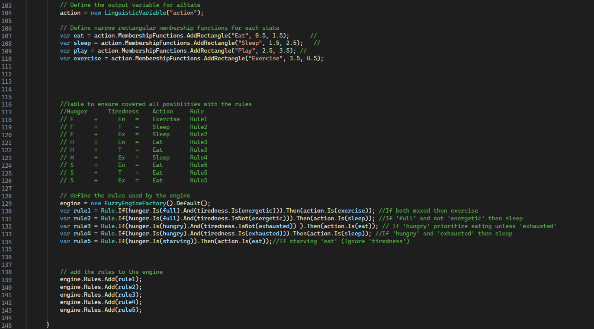
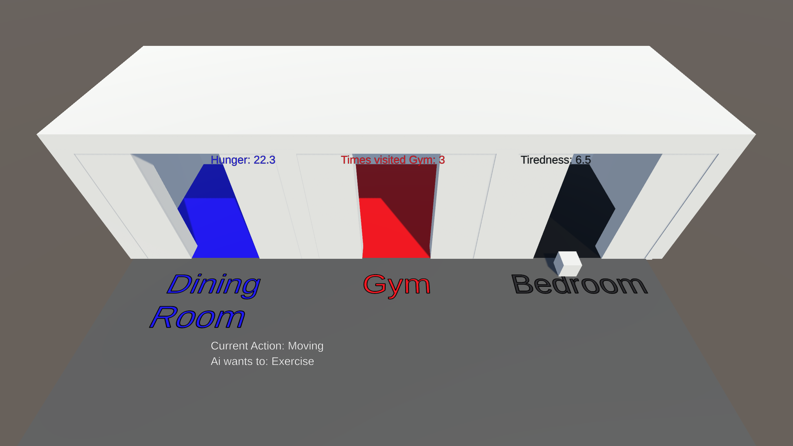
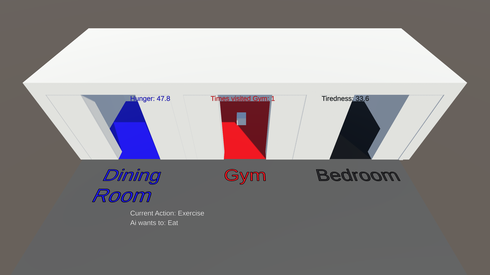

2024 Q4 · Solo Developer
AI: Fuzzy Logic
A Unity AI simulation where an agent chooses behaviours using fuzzy logic based on hunger and tiredness values.
Project overview
This university submission explored fuzzy logic as a decision-making technique for game AI. The agent evaluates internal needs and selects an appropriate action.
My contribution
- Created a Unity simulation showing fuzzy decision-making in action.
- Defined hunger and tiredness values as the core AI inputs.
- Built fuzzy rules that allow the AI to choose between activities.
- Visualised the selected behaviours in the Unity scene.
Gallery


